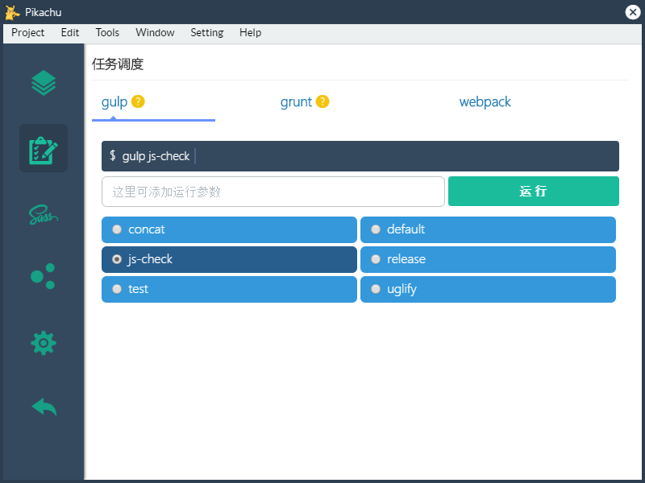

Pikachu
A tool of front end project management.

Pikachu 是一个前端项目管理工具，她可以：
可开启静态站点
支持gulp, grunt, webpack任务一键运行
可配置远程接口代理
支持sass,compass一键编译
模板内置include等常用功能，并可发布
为了帮助前端工程师更高效的开发，除了上述特性外，还有前端常用工具集合。
Download